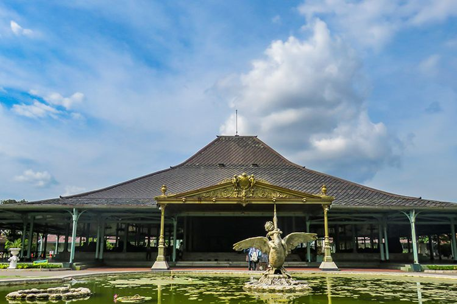

Pura Mangkunegaran
Located in the heart of Solo, Pura Mangkunegaran, or Mangkunegaran Palace, offers a captivating journey into the city's regal past. This exquisite palace stands as a testament to Solo's royal legacy and artistic finesse. Visitors can explore the palace's grandeur, from its ornate architecture to its opulent interiors.